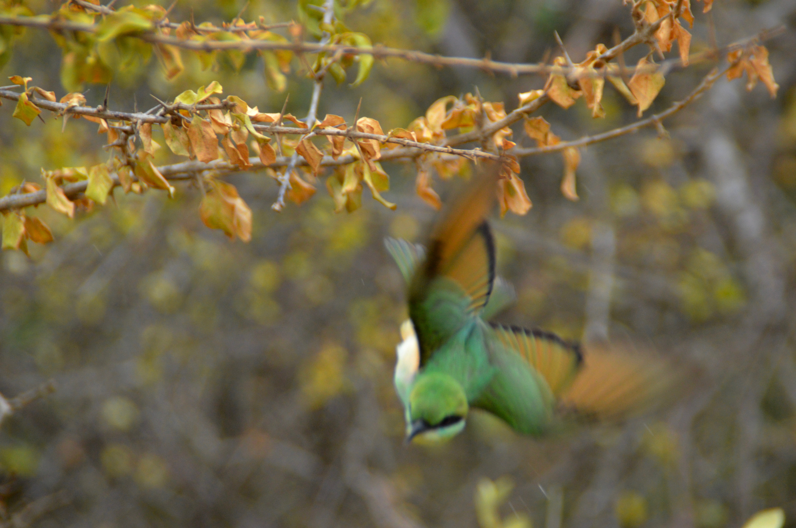

Mijn Projecten
Een selectie van projecten en creatief werk.

Website bynatasja
op bynatasja is mijn hoofd website waar ik mijn missie en visie deel maar ook wat ik allemaal doe. het is een site waar ik mijn diensten aanbied en waar je contact met me kunt opnemen als je interesse hebt in wat ik te bieden heb. deze site is gemaakt in wordpress en ik heb er veel plezier aan beleeft om te maken. wil je deze site ook zien? klik dan op de live site knop hieronder.
Live site
Bynatasjanova
Bynatasjanova is een platform waar ik aan bieden wat ik kan en waar ik voor sta. hier kun je meer lezen over mijn visie en missie en wat ik te bieden heb. deze site is af en hier bied ik mijn diensten aan en kun je ook contact met me opnemen als je interesse hebt in wat ik te bieden heb. deze site is gemaakt html en css en ik heb er veel plezier aan beleeft om deze te maken. wil je deze site ook zien? klik dan op de live site knop hieronder.
live siteMagazine gemaakt
Toen ik deze magaziene ging maken dacht ik bij me zelf een test om uit te proberen wat ik allemaal nog meer kan, maar toen ik deze heb gemaakt heb ik ook een magazien gemaakt voor mijn ouders die waren erg blij met het resultaat en ik ook. deze magazien is gemaakt in Adobe XD en ik heb er veel plezier aan beleeft om deze te maken. wil je deze magazien ook zien? klik dan op de download knop hieronder.
Download PDFProject website in ontwikkeling
Deze website is nog in ontwikkeling ben bezig met het maken van deze site voor een goede vriend die deze site nodig heeft voor wat hij doet. je kunt hier binnenkort meer over lezen en zien als deze klaar is.

website ga ik nog maken
deze is nog niet in ontwikkeling maar wil deze wel gaan maken voor vrienden van mij.die ik heel graag wil helpen met het maken van een website voor wat ze doen. deze site ga ik nog maken maar ik ben al wel bezig met het ontwerpen van deze site in Adobe XD. deze site ga ik nog maken maar ik ben al wel bezig met het ontwerpen van deze site in Adobe XD. ik ben al wel bezig met het ontwerpen van deze site in Adobe XD.

Gemaakt bestaat niet meer
Deze website was mijn eerste site die ik zelf heb gemaakt en deze site is omgtoverd naar andere stites bynatasjanova. Ales je meer wil zien zie je van zelf logo met link naar de site bynatasjanova. deze site is gemaakt in html en css en ik heb er veel plezier aan beleeft om deze te maken. wil je deze site ook zien? klik dan op de live site knop hieronder. deze site is gemaakt in html en css en ik heb er veel plezier aan beleeft om deze te maken. wil je deze site ook zien?

Producten fotografie
Ik heb vroeger foto's gemaakt van producten voor een webshop. voor Amw marine deze fotos worden gebruikt.
Bekijk webshop
Fotografie
Zoals je ziet op deze foto die ik heb gemaakt vindt ik super leuk om ook versschillende soorten fotos te maken en deze foto is gemaakt in friesland.

Fotografie
Deze foto heb ik bewerkt mij zelf ergens anders in de foto zie je het dit soort dingen kan ik ook voor je maken. niet alleen standaard foto's of bwerken.

Fotografie
Deze foto is gemaakt in spanje dieren fotografie is ook iets wat ik leuk vind om te doen en deze foto is gemaakt in spanje.

Fotografie
van deze vogel die aan het vliegen was, net op het goede moment een foto gemaakt en deze foto is gemaakt in zuid afrika. toen ik het zag op mijn lens en deed in een keer cliken dacht ik omg ik heb het perfecte moment vast gelegd en deze foto is gemaakt in zuid afrika.